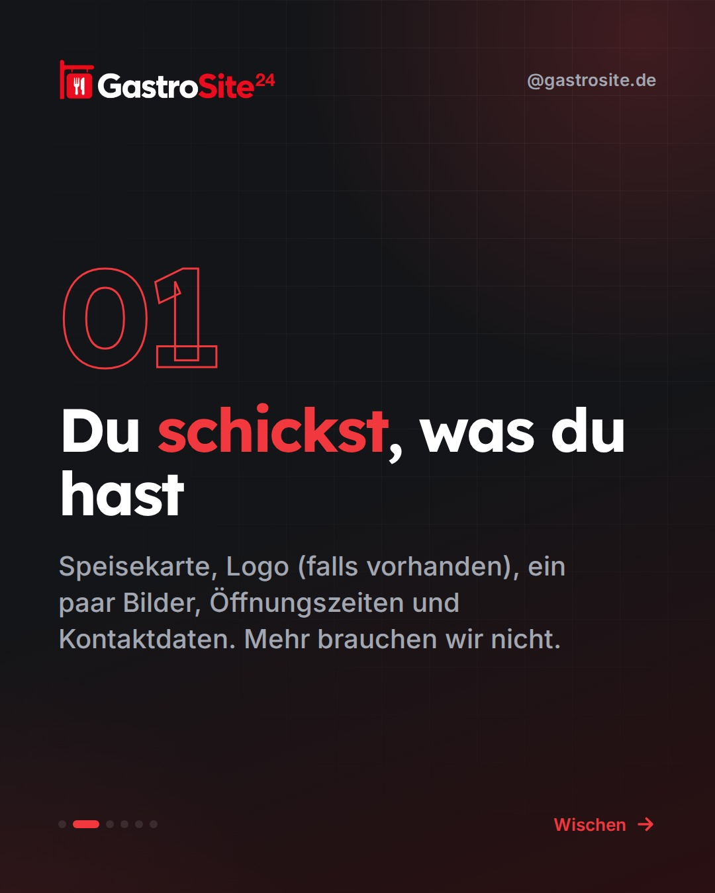
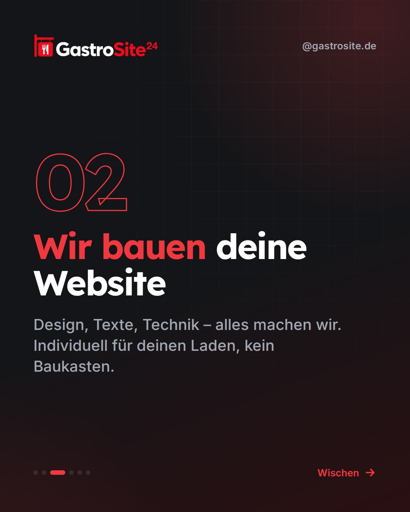
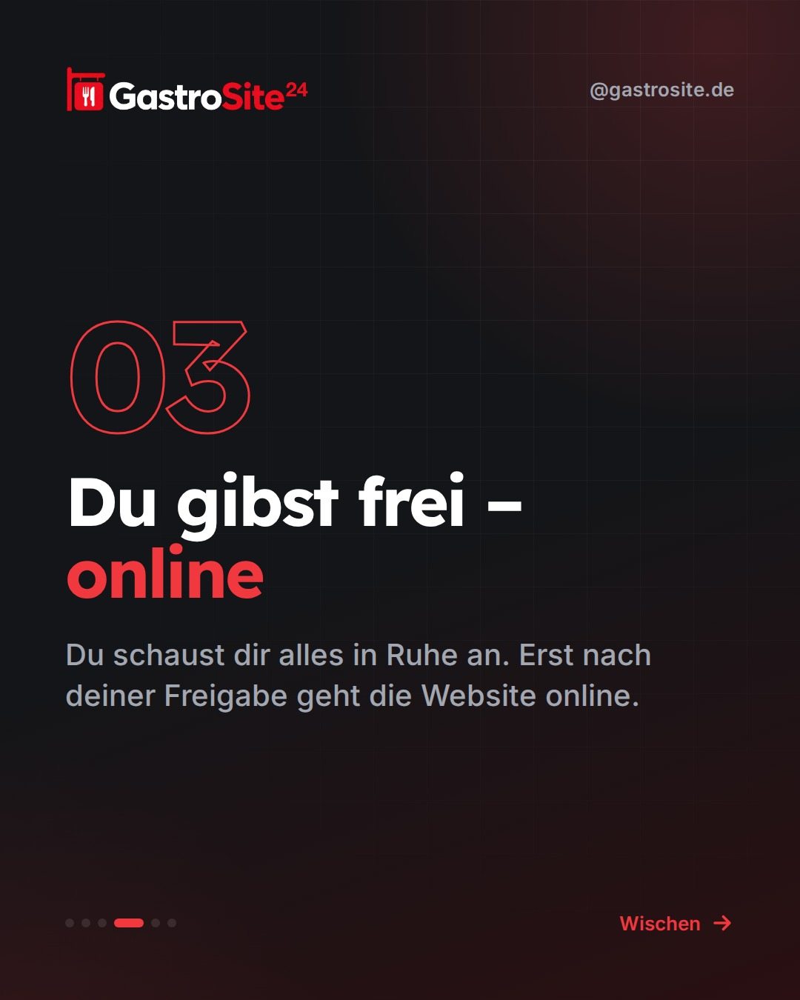
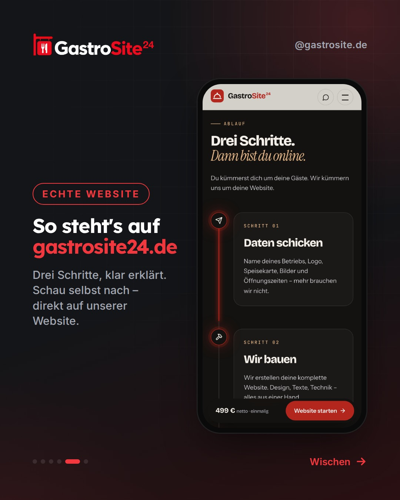
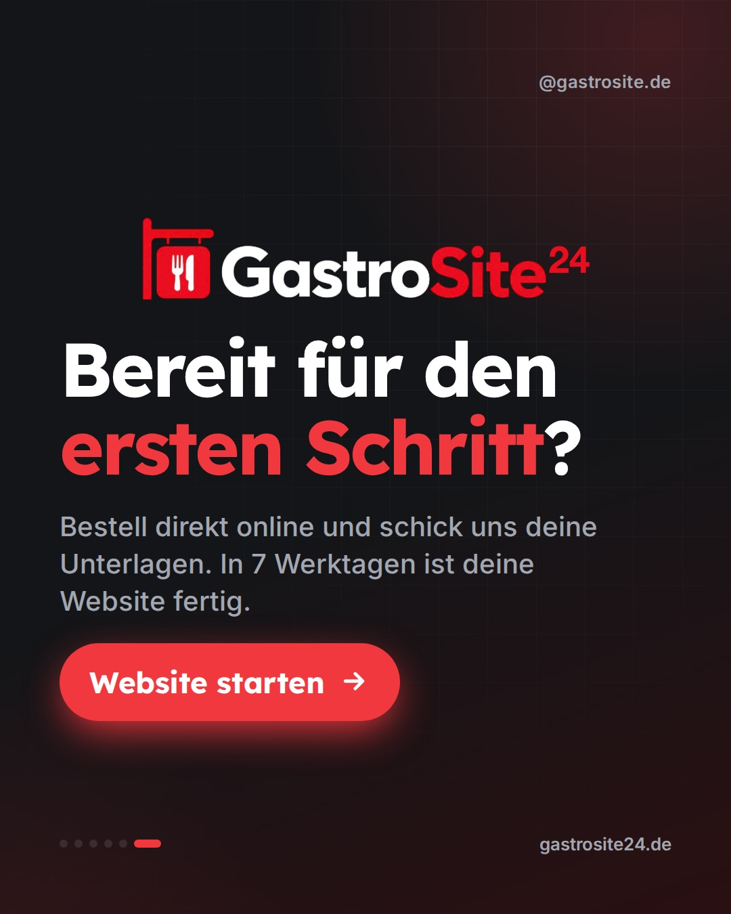

Donnerstag, 08.10.2026 · 12:00
SliderGepostet





Der Ablauf: Daten schicken, wir bauen, nach Freigabe online
So einfach geht's in 3 Schritten
Eine eigene Website für deinen Laden – ohne dass du dafür den Herd ausmachen musst. So läuft es bei GastroSite24: 1. Du schickst uns, was du sowieso hast: Speisekarte, Logo (falls vorhanden), ein paar Bilder, Öffnungszeiten und Kontaktdaten. 2. Wir bauen deine Website. Design, Texte, Technik – alles von uns. Individuell, kein Baukasten. 3. Du schaust dir alles an. Erst nach deiner Freigabe geht die Website online. Nach Erhalt deiner Unterlagen ist sie in 7 Werktagen fertig. Kein Basteln am Abend, kein Technik-Frust. 👉 Link in Bio – Website erstellen lassen #gastronomie #restaurant #gastrosite #selbstständig #gastrowebsiteStory ansehen ↗ · Auf Instagram ↗